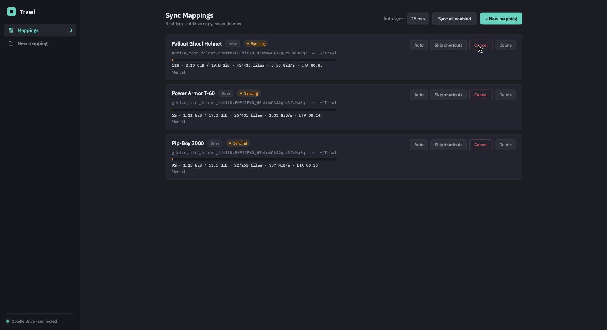
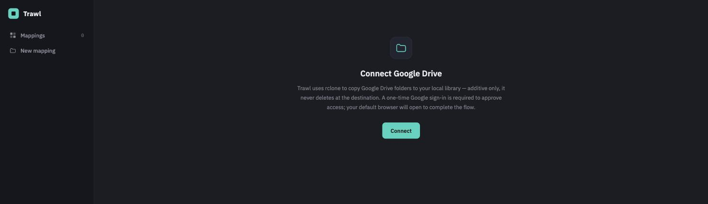
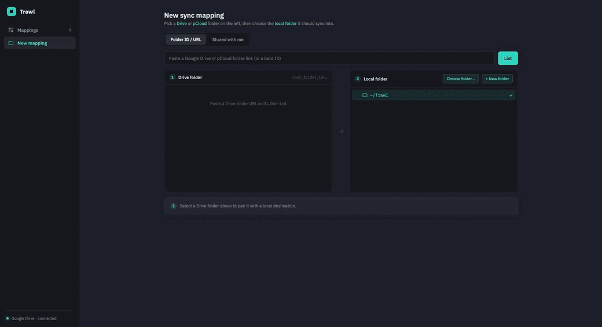
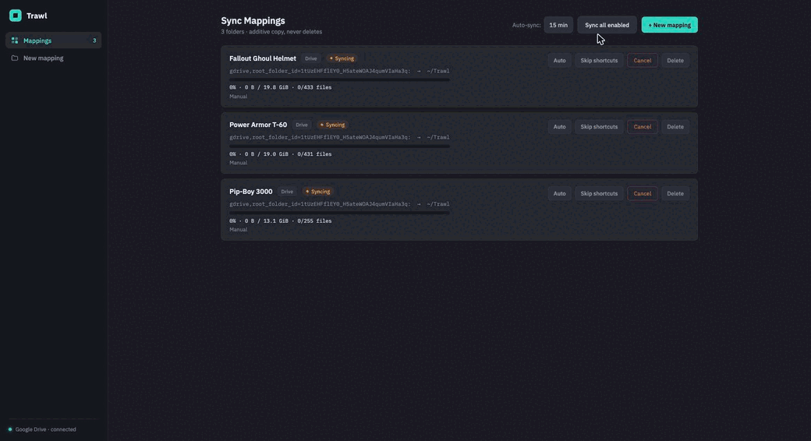

Pull shared cloud folders into a local library.
A small desktop app that syncs Google Drive & pCloud folders by link into a local folder using rclone. Paste a link, pick a destination, and pull — additive copy only, it never deletes at the destination.

Everything a pull-only sync should be.
Point Trawl at a shared folder, pair it with a local destination, and it keeps a current copy — without ever touching what's already there.
Sync by link
Paste a Google Drive folder URL / ID (or pick from Shared with me), or a pCloud public link. Trawl roots rclone right at it.
Live progress
The Rust backend streams parsed rclone stats to the UI — percent, bytes, files, speed, and ETA, for every run.
Auto-sync
Opt any mapping into background syncs on an interval. rclone copy is incremental, so idle runs are cheap.
Copy, never delete
Transfers are additive — the destination is never pruned. Every path is containment-checked so a mapping can't escape your library root.
Folder-loop proof
Detects a source that recurses forever, and a Skip shortcuts toggle copies straight through Google Drive shortcut loops.
Self-contained
rclone ships inside the app — nothing else to install. One command via Homebrew or curl | sh.
From connect to first pull.
A one-time Google connect, pair a folder, and pull. Trawl only ever pulls — no push, no two-way sync, no delete-at-destination.
Connect Google Drive
A one-time OAuth in your browser — the token stays on your machine. (pCloud public links need no connection.)

Add a sync mapping
Paste a Drive/pCloud link, pick a local destination, and save — the whole flow is one screen.

Pull, with live progress
Hit sync and watch additive copies stream in per mapping — percent, bytes, files, speed, ETA. Nothing at the destination is ever deleted.

Install Trawl.
rclone is bundled inside the app, so there's nothing else to set up.
Not notarized yet — Homebrew and the installer clear the macOS quarantine for you. On first launch, connect Google Drive when prompted (pCloud links need no connection).
Free, open source, and yours to keep.
No accounts, no cloud, no telemetry. Trawl only ever reads from the source and writes to your disk.